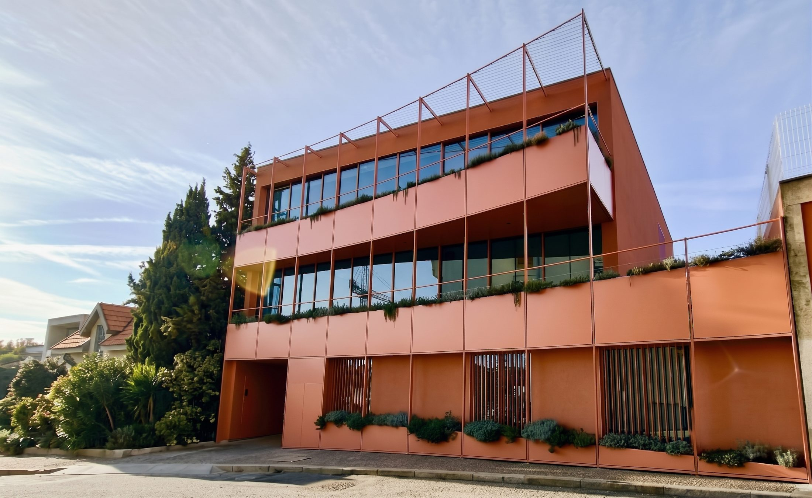
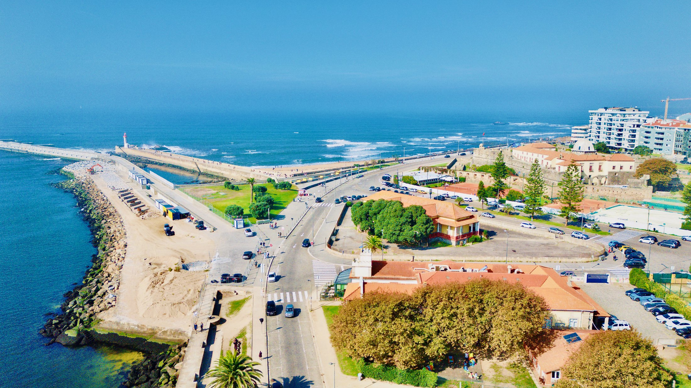
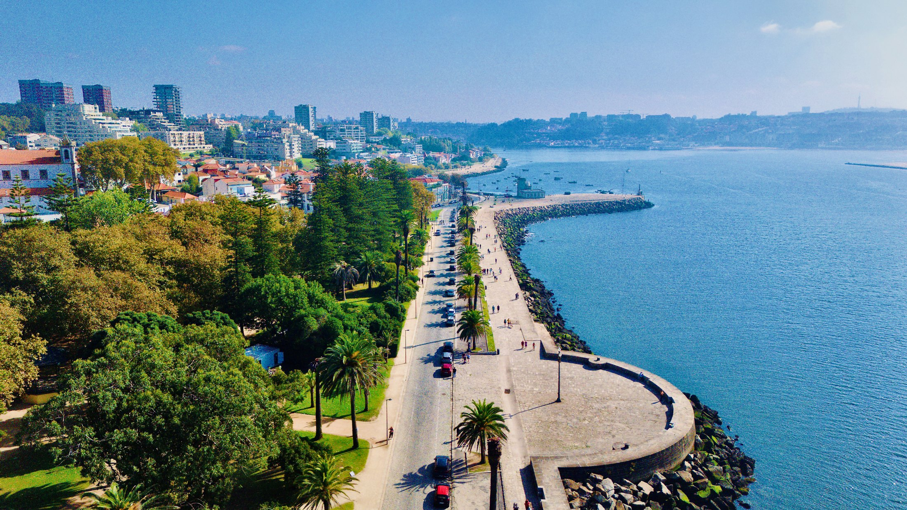
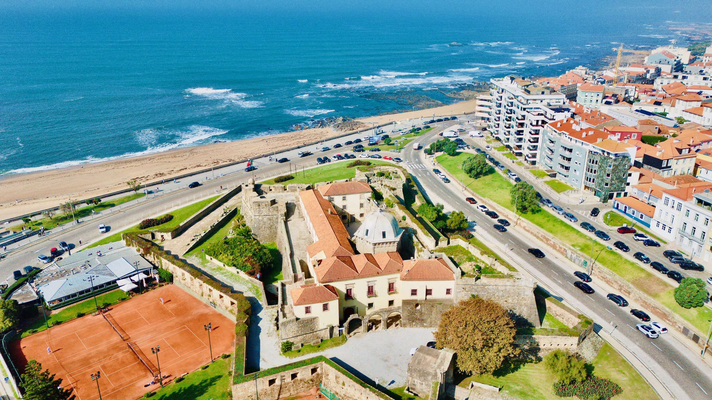
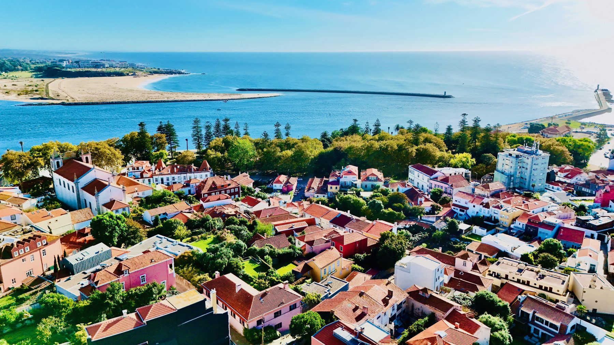
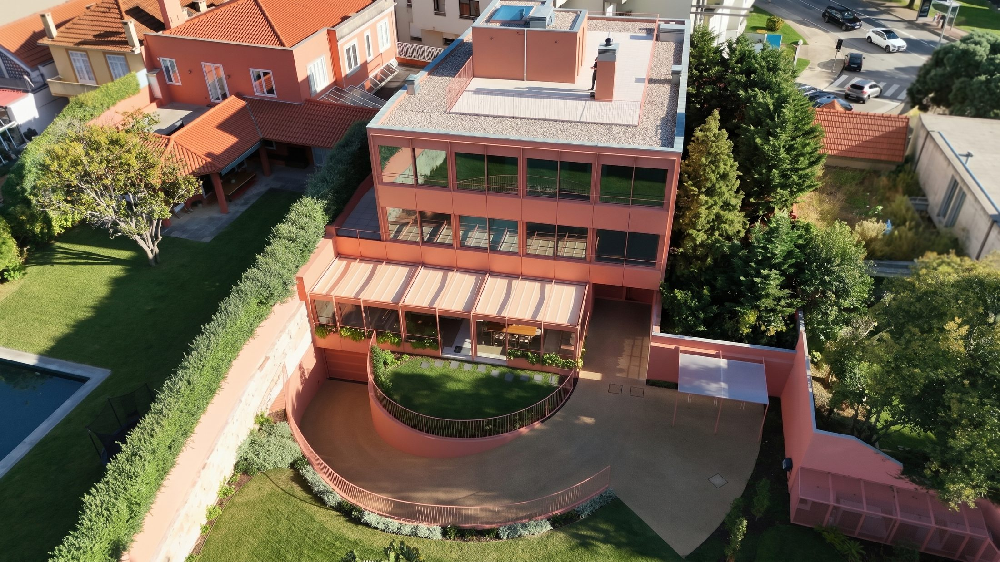
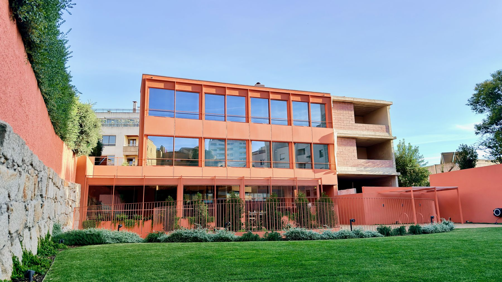
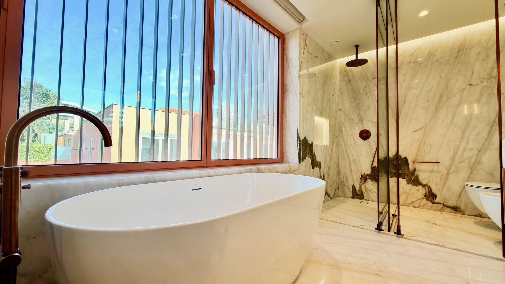
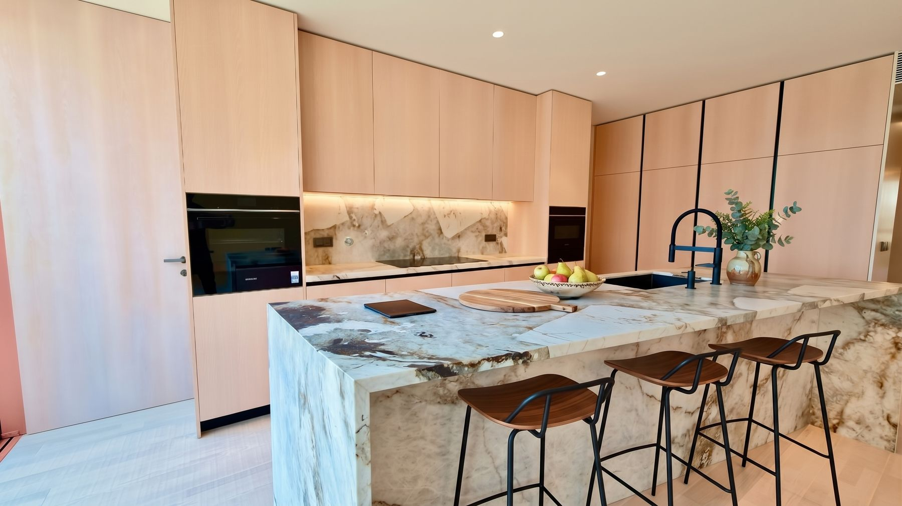
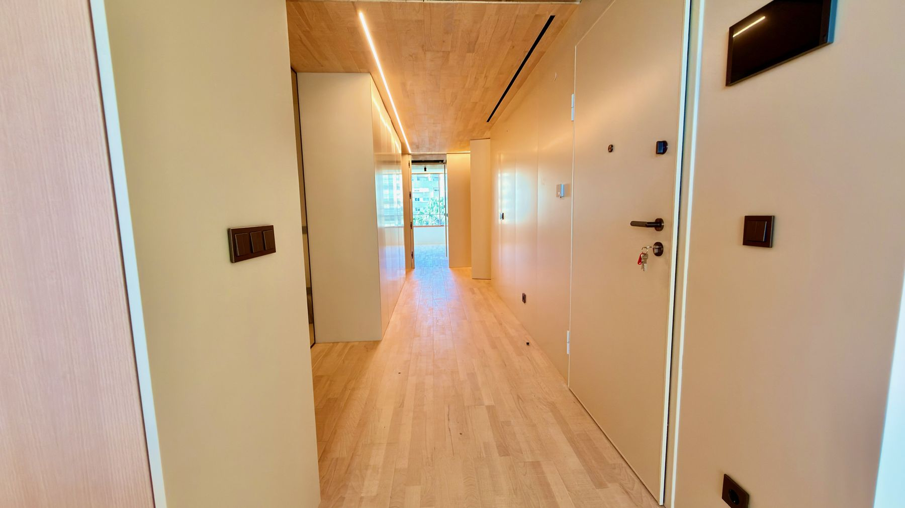

Condominio Coral
Dos pisos de cuatro dormitorios (T4+1) en Foz do Douro
Presentado por Cheila Monteiro · CENTURY 21 Arquitectos II
«Hay zonas de Oporto que no necesitan presentación. Foz do Douro es una de ellas, y por eso cada oportunidad aquí tiene un peso especial en el mercado.»
Dos T4+1 que reúnen todo lo que busca una familia exigente: ubicación, calidad de vida, acabados premium y terrazas que marcan la diferencia.
Descubra el Condominio Coral en vídeo
Cerca de todo lo que importa
A dos minutos a pie de la Universidad Católica y del Colegio Británico (OBS). A seis minutos, el Jardim do Passeio Alegre. A menos de diez, las playas de Foz. Una ubicación ideal para familias con hijos, profesionales internacionales e inversores que conocen la demanda constante de esta zona a lo largo del tiempo.
Ver en el mapa

Foz do Douro es una de las zonas más codiciadas de Oporto: el paseo marítimo atlántico, las playas, el Jardim do Passeio Alegre y el faro de Felgueiras en la desembocadura del río. Calles tranquilas, villas clásicas, restaurantes y terrazas junto al mar, todo a pocos minutos del Condominio Coral.
La playa y el paseo marítimo atlántico de Foz, a pocos minutos del Condomínio Coral.


Arquitectura contemporánea, jardín privado
Obra nueva con zona verde exterior, amplias terrazas y plazas de garaje.


Cuidado hasta el último detalle
Con una distribución inteligente y acabados de alta calidad, cada piso ha sido pensado al detalle para ofrecer el máximo confort y sofisticación. Cuatro amplias suites, todas con vestidor, garantizan privacidad y bienestar a toda la familia. La zona de día es amplia, luminosa y funcional, con un elegante salón integrado en la cocina moderna y totalmente equipada: ideal para recibir, convivir y disfrutar del placer de cocinar.
«Los acabados hablan por sí solos.»
Mármol de una sola pieza en los baños, suelo radiante, carpintería minimalista con grandes ventanales y climatización eficiente, con certificado energético A. Cada detalle ha sido pensado para que estos pisos sean confortables, sostenibles y atemporales.



Dos pisos, dos terrazas. Es lo que distingue a cada uno.
En ambos, el salón se abre a un balcón con acceso a la terraza, complementada por la zona exterior ajardinada de ocio del condominio.
2.ª planta · terraza lateral
Una terraza lateral amplia y reservada, en forma de L, a lo largo del salón y de las suites, lista para tomar la forma que imagine: comedor al aire libre, zona de estar o jardín.
- Superficie útil236 m²
- Superficie construida375 m²
- Suites · baños4 · 5
- Garaje · energía4 plazas · A
3.ª planta · azotea con vistas al mar
«Una terraza con vistas al mar: el elemento que define esta vivienda.»
En lo alto del edificio, una azotea con vistas al mar, el mayor espacio exterior del Coral, perfecto para momentos únicos de ocio y convivencia.
- Superficie útil236 m²
- Superficie construida420 m²
- Suites · baños4 · 5
- Garaje · energía4 plazas · A
{{plantaTxt}} Plano ilustrativo, con mobiliario de simulación.
| 2.ª planta | 3.ª planta | |
|---|---|---|
| Terraza | Lateral, en L | En la azotea |
| Vistas | Entorno verde | Vistas al mar |
| Sup. construida | 375 m² | 420 m² |
| Interiores | T4+1 · 236 m² | T4+1 · 236 m² |
Precios y condiciones de compra presentados personalmente por la consultora, en visita o reunión.
En Foz do Douro, a esta distancia del mar y con estos acabados, oportunidades como esta no surgen a menudo.
«Si desea saber más, concertar una visita o conocer todo el proceso de compra, estoy a su disposición. Contacte conmigo directamente.»
Llamada a la red móvil portuguesa.